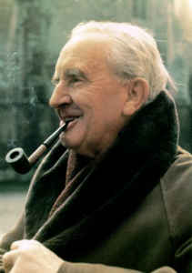

Die Bücher Hobbit wurde von J.R.R.Tolikien geschrieben.Das erste Buch ist "Eine unerwartete Reise",das zweite Buch ist "Smaugs Einöde" und das dritte Buch ist "Die Schlacht der fünf Heere"."Die Schlacht der fünf Heere "ist mein liebling Teil weil es am meisten Spannungen hat. J.R.R.Tolkien hat auch die Bücher " Der Herr der Ringe" geschrieben. Tolkien ist am 3.Januar 1892 geboren und am 2.September 1973 geboren.
